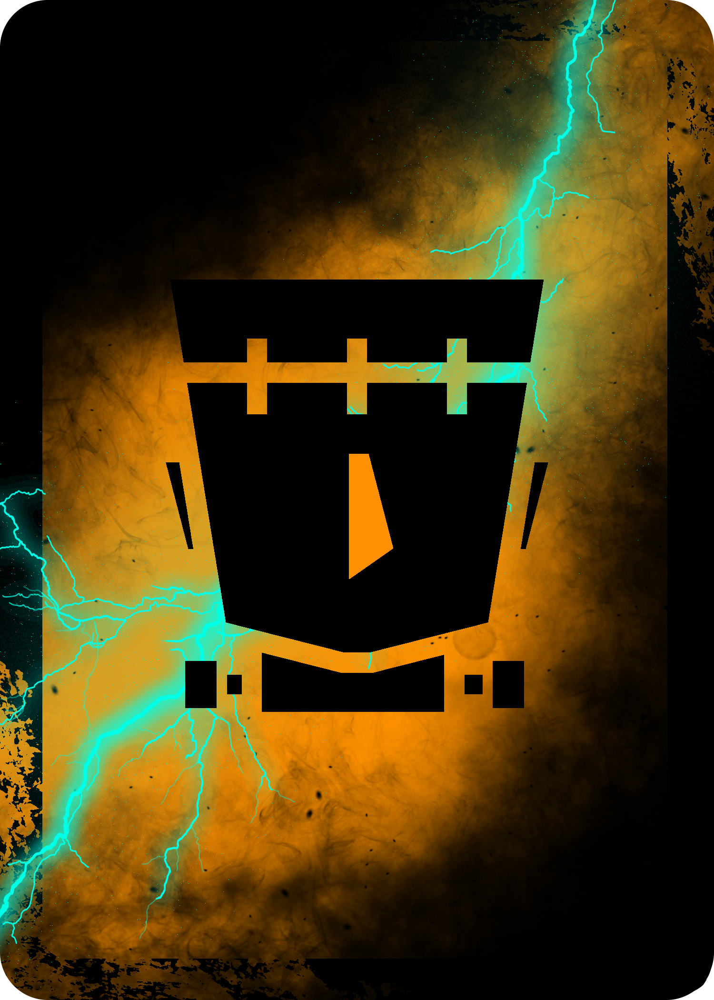

Frankensteining Frenzy is a game about card effects and creature creation! The players construct their Frankenstein’s Monsters out of 5 different parts - a Head, a Torso, Legs, a Right Arm, and a Left Arm – and each part can be equipped with an accessory to further boost its abilities. At the start of each turn, the players declare if they are going to attempt to Draw, Discard, Create, or Battle, and whichever phases are declared are carried out, assuming the conditions to do so are met. These phases are always done in order of Drawing -> Discard Effect -> Creation -> Battle. Players pit their partial creatures against one another in a race to create the strongest completed Frankenstein’s Monsters, accessories and all! This is a game where you might find a Man Lion wearing a top hat fighting an Angelic, Fridge Pegasus or simply two arms trying to arm wrestle for dominance! What kind of creature will you create?